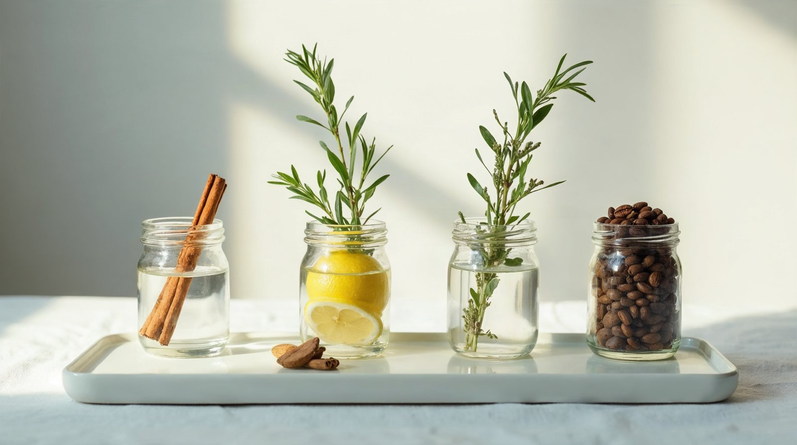
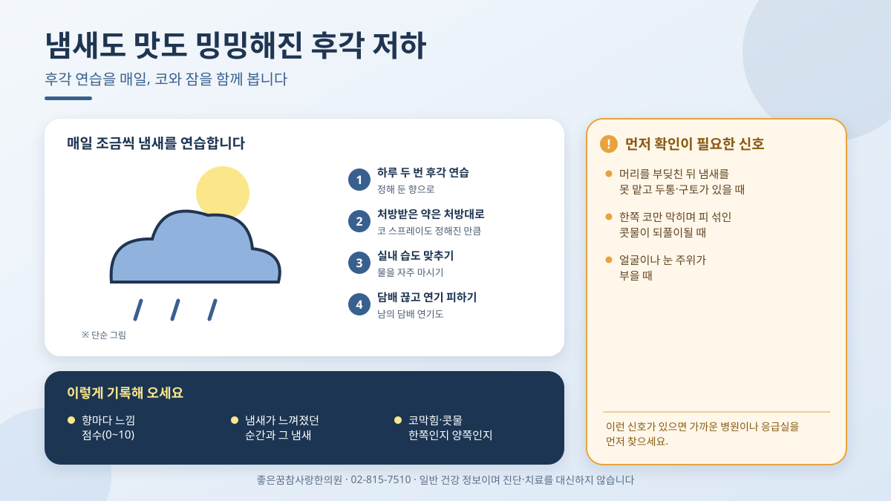

이종호 한의사 감수좋은꿈참사랑한의원 대표원장 (한의사 면허번호 19769)발행 2026-11-26 · 수정 2026-11-26
이 글의 차례
아침에 커피를 내리는데 늘 좋아하던 향이 나지 않습니다. 된장찌개를 끓여도 냄새가 멀게 느껴지고, 간을 보니 짠맛은 알겠는데 맛이 밍밍합니다. 가족이 "뭐 타는 냄새 안 나?" 하고 물을 때 나만 모르고 있었다는 걸 알게 되면 덜컥 마음이 내려앉지요.
후각 저하는 냄새를 맡는 힘이 예전보다 떨어진 상태를 말합니다. 냄새를 아예 못 맡는 경우도 있고, 희미하게만 느끼는 경우도 있습니다. 어떤 분은 익숙한 냄새가 전혀 다른 냄새로, 때로는 불쾌한 냄새로 느껴진다고 말씀하십니다.
진료실에서 이런 말씀을 자주 듣습니다. "감기는 다 나았는데 냄새만 안 돌아와요." "밥맛이 없어서 먹는 재미가 사라졌어요." 냄새는 눈에 보이지 않아서 주변에서 그 불편을 잘 몰라주기도 합니다. 그래서 더 외롭게 느껴지실 수 있습니다.
먼저 분명히 말씀드릴 것이 있습니다. 후각 저하는 원인이 여럿이라, 코 안과 후각을 직접 보는 이비인후과 검사가 먼저 필요합니다. 한의원 진료는 그 검사와 치료를 대신하지 않고, 곁에서 코와 몸 전체의 흐름을 함께 살피는 자리입니다.
냄새는 어떻게 맡게 될까요
냄새는 공기에 섞인 아주 작은 물질이 코 안 깊은 천장 쪽, 후각 점막에 닿으면서 시작됩니다. 이곳의 후각 세포가 신호를 만들어 뇌로 보내면 비로소 '커피 향', '비누 냄새'로 느끼게 됩니다.
그래서 후각 저하는 크게 두 갈래로 생각합니다. 하나는 냄새 물질이 후각 점막까지 가지 못하는 경우로, 코막힘이나 콧속 염증이 원인입니다. 다른 하나는 냄새가 도착해도 후각 세포나 신경이 신호를 잘 만들지 못하는 경우입니다.
두 가지가 함께 있는 경우도 적지 않습니다. 어느 쪽에 더 가까운지에 따라 살필 것과 기다리는 시간이 달라지니, 처음에 이 구분을 함께 해 보는 것이 중요합니다.
왜 냄새를 잘 못 맡게 될까요
후각 저하의 원인은 생각보다 다양합니다. 진료실에서 자주 만나는 경우를 나눠 보면 이렇습니다.
- 감기·독감 뒤: 바이러스가 후각 세포를 지치게 해, 코막힘은 풀렸는데 냄새만 돌아오지 않는 경우입니다.
- 만성 부비동염과 코 속 물혹(비용종): 콧속이 붓고 막혀 냄새가 위로 올라가지 못하는 경우입니다.
- 알레르기 비염: 코가 붓는 시기에 냄새가 둔해졌다가, 코가 편해지면 돌아오는 흐름을 보이기도 합니다.
- 나이: 나이가 들면서 후각 세포가 새로 만들어지는 힘이 줄어 서서히 둔해질 수 있습니다.
- 머리를 부딪친 뒤: 후각 신경이 지나는 길이 다쳐 냄새가 떨어지는 경우가 있습니다.
- 흡연, 일부 약, 화학 물질에 오래 노출된 경우도 영향을 줄 수 있습니다.
이 밖에도 신경계의 변화와 관련해 후각이 먼저 떨어지는 경우가 있다고 알려져 있습니다. 그래서 뚜렷한 이유 없이 서서히 냄새가 줄었다면 이비인후과에서 검사를 받아 보시고, 필요하면 신경과 진료도 상의해 보시도록 안내합니다.
계절과 생활이 코에 미치는 영향
찬 바람이 부는 겨울에는 실내 난방으로 공기가 마르고, 감기도 잦아 코가 쉽게 붓습니다. 봄과 가을 환절기에는 꽃가루와 일교차로 비염이 흔들립니다. 이런 시기마다 냄새가 더 멀어진다고 느끼는 분이 많습니다.
잠이 모자라거나 몸이 지친 시기에도 코가 먼저 막히는 분이 있습니다. 코는 바깥 공기를 가장 먼저 만나는 곳이라 몸의 컨디션이 그대로 드러나기 쉽습니다. 그래서 냄새의 변화를 계절, 잠, 피로와 나란히 놓고 보면 내 코가 언제 힘들어하는지 조금씩 보이기 시작합니다.
냄새가 줄면 왜 맛도 줄까요
"냄새는 그렇다 쳐도 맛까지 없어요"라는 말씀을 많이 하십니다. 혀는 단맛, 짠맛, 신맛, 쓴맛, 감칠맛 정도를 느끼고, 우리가 '맛'이라고 부르는 풍미의 상당 부분은 음식을 씹을 때 목 뒤로 올라가는 냄새에서 옵니다.
그래서 후각이 떨어지면 짠지 단지는 알지만 무슨 음식인지 구별하는 재미가 사라집니다. 코를 막고 사과와 양파를 먹으면 구별이 어렵다는 이야기와 같은 이치입니다. 혀의 맛 자체가 줄었는지, 풍미가 줄었는지를 나눠 보는 것도 진료에 도움이 됩니다.
냄새가 다르게 느껴질 때
후각이 돌아오는 과정에서 익숙한 냄새가 이상하게 느껴지는 분이 있습니다. 커피에서 탄 냄새가, 고기에서 상한 냄새가 나는 것처럼 느끼는 경우입니다. 아무것도 없는데 냄새가 난다고 느끼는 경우도 있습니다.
이런 변화는 놀랍고 불쾌하지만, 회복 과정에서 신경이 다시 연결되며 생기는 경우가 있다고 알려져 있습니다. 다만 혼자 판단하기보다 이비인후과 진료 때 꼭 말씀해 주세요. 어떤 냄새가 어떻게 다르게 느껴지는지 적어 두면 설명이 쉬워집니다.

후각 연습, 매일 조금씩
감기 뒤 후각 저하에는 '후각 훈련'이 도움이 될 수 있다는 연구가 쌓여 있습니다. 향이 또렷한 몇 가지를 정해 두고, 하루 두 번 하나씩 맡으며 그 냄새를 떠올리는 연습입니다.
- 장미, 레몬, 정향, 유칼립투스처럼 성격이 서로 다른 향 네 가지를 고르기
- 아침저녁으로 하나에 10~20초씩, 천천히 가볍게 맡기
- 맡는 동안 그 향의 기억(레몬을 짜던 장면 등)을 함께 떠올리기
- 몇 달 동안 꾸준히 하고, 한 달마다 느낌을 적어 두기
집에 있는 귤껍질, 커피 원두, 계피, 참기름으로 시작하셔도 됩니다. 효과는 사람마다 다르고 시간이 걸리니, 조급해하지 않고 일과처럼 해 보시길 권합니다.
양치하고 난 뒤, 잠들기 전처럼 매일 하는 일 바로 뒤에 붙여 두면 잊지 않기 쉽습니다. 향은 몇 주마다 새것으로 바꿔 주어야 냄새가 날아가지 않습니다.
냄새를 못 맡을 때 생활에서 챙길 것
냄새는 우리 생활의 경보 장치 역할도 합니다. 후각이 돌아오는 동안에는 그 빈자리를 다른 방법으로 채워 두면 마음이 한결 놓입니다.
- 가스레인지 주변에 가스 누출 경보기와 화재 경보기를 달아 두기
- 냉장고 음식에는 날짜를 적어 두고, 유통기한을 눈으로 확인하기
- 요리할 때는 타이머를 쓰고, 불 앞을 오래 비우지 않기
- 몸 냄새가 걱정되면 가까운 가족에게 솔직하게 부탁해 확인받기
맛이 밍밍해 간을 세게 하기 쉬우니, 소금 대신 식초, 레몬, 후추, 허브처럼 혀와 입안을 자극하는 재료로 맛의 변화를 주는 것도 방법입니다. 식감과 온도, 색이 다른 음식을 곁들이면 먹는 즐거움이 조금 살아납니다.
스스로 가늠해 보는 몇 가지 질문
정확한 구분은 검사로 하지만, 아래 질문에 답해 보시면 진료 때 이야기를 꺼내기가 한결 수월합니다.
- 코가 뻥 뚫린 날에는 냄새가 조금 돌아오나요? 그렇다면 코막힘의 몫이 클 수 있습니다.
- 코는 시원한데도 냄새가 멀게 느껴지나요? 그렇다면 후각 신경 쪽을 함께 살펴야 할 수 있습니다.
- 샤워할 때 김이 서린 욕실에서는 냄새가 조금 더 나나요?
- 단맛·짠맛은 그대로인데 음식 구별만 어려운가요, 혀의 맛 자체도 줄었나요?
- 양쪽이 똑같이 둔한가요, 한쪽 콧구멍을 막고 맡아 보면 차이가 나나요?
답이 애매해도 괜찮습니다. 이 질문들을 한 번 떠올려 보는 것만으로 내 코의 상태를 조금 더 구체적으로 설명할 수 있게 됩니다.
냄새를 잃은 마음도 함께 봅니다
후각 저하는 겉으로 드러나지 않는 불편이라 가볍게 여겨지기 쉽습니다. 그런데 밥상 앞의 즐거움, 계절의 냄새, 가족의 살 냄새처럼 일상의 작은 기쁨이 한꺼번에 흐려지면 마음이 생각보다 깊이 가라앉습니다.
식욕이 줄어 끼니를 거르거나, 반대로 간을 세게 해 짜고 단 음식을 자꾸 찾게 되기도 합니다. 요리를 업으로 하는 분은 일에 대한 걱정까지 겹치지요. 그래서 저는 코의 상태만이 아니라 요즘 식사와 기분이 어떤지도 함께 여쭙니다.
마음이 오래 가라앉아 일상이 버겁다면 그 이야기도 편하게 꺼내 주세요. 필요하면 정신건강의학과 상담도 함께 안내합니다.
먼저 이렇게 여쭙니다
처음 오시면 대략 이런 순서로 여쭙니다. 기억나는 것부터 말씀해 주시면 됩니다.
- 냄새가 줄어든 것은 언제부터이고, 갑자기 왔나요, 서서히 왔나요?
- 그 무렵 감기나 독감, 코로나를 앓았거나 머리를 부딪친 일이 있었나요?
- 코막힘, 누런 콧물, 콧물이 목 뒤로 넘어가는 느낌이 함께 있나요?
- 한쪽 코만 막히나요, 양쪽 다 막히나요?
- 냄새가 다르게 느껴지거나, 없는 냄새가 나는 것 같은 때가 있나요?
- 이비인후과에서 받은 검사와 진단, 지금 쓰는 약이나 코 스프레이는 무엇인가요?
- 잠과 식사, 피로는 요즘 어떠신가요?
손에 익은 물건 몇 가지를 맡아 보며 어느 정도 느껴지는지 여쭙기도 합니다. 정확한 후각 검사는 이비인후과에서 받으시도록 안내하고, 한의원에서는 그 결과를 바탕으로 이야기를 이어 갑니다.
일상에서 먼저 해 볼 수 있는 것
후각이 돌아오는 길은 대개 천천히 갑니다. 그 시간 동안 코가 덜 지치게 지내는 것부터 시작해 보세요.
- 하루 두 번, 정해 둔 향으로 후각 연습하기
- 처방받은 비염·부비동염 약과 코 스프레이는 처방대로 쓰기
- 약국 코 막힘 스프레이는 며칠 넘게 이어 쓰지 않기
- 실내가 너무 마르지 않게 습도를 맞추고, 물을 자주 마시기
- 담배는 끊고, 다른 사람의 담배 연기도 피하기
- 잠드는 시각을 일정하게 맞추고, 피곤한 날은 일찍 쉬기
코막힘이 함께 있다면 식염수로 코를 헹구는 방법을 이비인후과에서 배워 써 보셔도 좋습니다. 물의 온도와 양, 기구 소독을 지키는 것이 중요합니다.
한의원에서 함께 살필 수 있는 경우
- 이비인후과 검사와 치료는 이어 가면서, 감기 뒤로 후각과 함께 기운도 잘 돌아오지 않는 경우
- 코막힘과 후비루가 오래가 잠이 얕고 낮에 머리가 무거운 경우
- 몸이 차고 소화가 약해, 계절이 바뀔 때마다 코가 먼저 흔들리는 경우
- 냄새와 맛이 사라져 식욕이 떨어지고 마음이 많이 가라앉은 경우
좋은꿈참사랑한의원에 처음 오시면 아래 '먼저 확인이 필요한' 신호가 없는지부터 봅니다. 그다음 이비인후과 검사 결과와 쓰고 있는 약을 확인하고, 맥을 짚으며 코의 상태와 잠, 소화, 체온, 대소변을 여쭙니다.
진찰을 마치면 상태에 맞춰 침 치료나 한약 상담이 필요한지 함께 정합니다. 한약을 상의할 때는 드시는 약과 겹치는 부분이 없는지 살피며 신중하게 정합니다. 코 안 내시경과 후각 검사, 수술이 필요한지의 판단은 이비인후과의 몫이라, 필요하면 그쪽 진료를 먼저 안내합니다.
한의원 진료를 시작했다고 처방받은 약을 임의로 끊지는 마세요. 약을 줄이거나 바꾸는 일은 처방한 의사와 상의해서 정하는 것이 안전합니다.
다시 오시면 지난번 이후 냄새가 느껴졌던 순간과 코의 상태, 정한 생활 목표 하나가 해 볼 만했는지부터 이어서 듣습니다. 목표가 버거웠다면 줄이고, 할 만했다면 하나를 더합니다.
이렇게 기록해 오시면 상담이 쉬워집니다
한 달 정도만 짧게 적어 오셔도 흐름이 훨씬 잘 보입니다.
- 후각 연습에 쓰는 향마다 0~10점으로 느낌 점수 매기기
- 냄새가 조금이라도 느껴졌던 순간과 그 냄새
- 냄새가 다르게 느껴진 때와 어떻게 달랐는지
- 코막힘과 콧물의 정도, 한쪽인지 양쪽인지
- 쓰고 있는 약과 코 스프레이, 쓴 횟수
- 잠든 시각과 깬 시각, 피곤했던 날
빠진 날이 있어도 괜찮습니다. 적힌 줄부터 같이 읽어 보겠습니다. 점수가 1점, 2점씩 움직이는 것도 의미가 있어서, 한 달을 모아 보면 스스로도 변화를 알아채기 쉬워집니다.
좋아하던 향과 밥맛이 사라진 시간 동안 얼마나 허전하셨을까 싶습니다. 냄새는 기억과 마음에 깊이 닿아 있어서 그 빈자리가 더 크게 느껴집니다. 서두르지 않고 한 달씩, 코와 몸이 회복할 수 있는 길을 같이 찾아보겠습니다.
이런 증상은 먼저 확인이 필요합니다
- 머리를 부딪친 뒤 냄새를 못 맡게 되었고 심한 두통이나 구토가 함께 있는 경우
- 한쪽 코만 계속 막히면서 피 섞인 콧물이 되풀이되고 얼굴이나 눈 주위가 붓는 경우
이런 신호가 있으면 한의원보다 가까운 병원이나 응급실을 먼저 찾으세요.
함께 읽으면 좋은 글
- 코막힘과 누런 콧물이 오래가는 만성 부비동염(축농증)은 어떻게 살피나요?
- 코가 막힌 것인지 콧물이 목으로 넘어가는 것인지 어떻게 구분해 말하나요?
- 감기나 독감은 지나갔는데 기운이 돌아오지 않고 몸이 처질 때는 어떻게 살피나요?
- 감기는 나았는데 기침만 몇 주째 남아 있을 때는 어떻게 살피나요?

여쭙는 것
- 냄새가 줄어든 것은 언제부터이고, 갑자기 왔나요, 서서히 왔나요?
- 그 무렵 감기나 독감, 코로나를 앓았거나 머리를 부딪친 일이 있었나요?
- 코막힘, 누런 콧물, 콧물이 목 뒤로 넘어가는 느낌이 함께 있나요?
생활에서 해 볼 것
- 하루 두 번, 정해 둔 향으로 후각 연습하기
- 처방받은 비염·부비동염 약과 코 스프레이는 처방대로 쓰기
- 약국 코 막힘 스프레이는 며칠 넘게 이어 쓰지 않기
한의원에서 함께 살필 것
- 이비인후과 검사와 치료는 이어 가면서, 감기 뒤로 후각과 함께 기운도 잘 돌아오지…
- 코막힘과 후비루가 오래가 잠이 얕고 낮에 머리가 무거운 경우
- 몸이 차고 소화가 약해, 계절이 바뀔 때마다 코가 먼저 흔들리는 경우
먼저 확인이 필요한 신호
- 머리를 부딪친 뒤 냄새를 못 맡게 되었고 심한 두통이나 구토가 함께 있는 경우
- 한쪽 코만 계속 막히면서 피 섞인 콧물이 되풀이되고 얼굴이나 눈 주위가 붓는 경우
한눈에 보는 표
| 구분 | 핵심 |
|---|---|
| 여쭙는 것 | 냄새가 줄어든 것은 언제부터이고, 갑자기 왔나요, 서서히 왔나요? 그 무렵 감기나 독감, 코로나를 앓았거나 머리를 부딪친 일이 있었나요? |
| 생활에서 해 볼 것 | 하루 두 번, 정해 둔 향으로 후각 연습하기 처방받은 비염·부비동염 약과 코 스프레이는 처방대로 쓰기 |
| 한의원에서 함께 살필 것 | 이비인후과 검사와 치료는 이어 가면서, 감기 뒤로 후각과 함께 기운도 잘 돌아오지 않는 경우 코막힘과 후비루가 오래가 잠이 얕고 낮에 머리가 무거운 경우 |
| 먼저 확인이 필요한 신호 | 머리를 부딪친 뒤 냄새를 못 맡게 되었고 심한 두통이나 구토가 함께 있는 경우 한쪽 코만 계속 막히면서 피 섞인 콧물이 되풀이되고 얼굴이나 눈 주위가 붓는 경우 |
자주 묻는 질문
후각 저하도 한의원에서 진료를 받을 수 있나요?
네, 이비인후과 검사와 치료를 이어 가시면서 함께 상담받으실 수 있습니다. 한의원에서는 진찰 뒤 코의 상태와 잠·소화·피로 같은 몸 전체의 흐름을 살핍니다.
이비인후과 약을 쓰고 있는데 한약을 같이 먹어도 되나요?
쓰고 계신 약을 모두 알려 주시면 겹치는 부분이 없는지 살펴 신중하게 정합니다. 필요하면 처방한 곳과도 상의하시도록 안내합니다.
감기 뒤 냄새가 안 돌아오면 얼마나 기다려 봐야 하나요?
몇 주 사이에 돌아오는 분도 있고 몇 달이 걸리는 분도 있습니다. 두 주 넘게 그대로라면 기다리기만 하기보다 이비인후과 확인을 받고 후각 연습을 시작해 보시길 권합니다.
후각 연습은 어떤 향으로 해야 하나요?
정해진 향이 따로 있지는 않습니다. 성격이 서로 다른 또렷한 향 네 가지를 골라 하루 두 번 꾸준히 맡는 것이 중요합니다. 집에 있는 귤껍질, 커피, 계피 같은 것으로 시작하셔도 됩니다.
주말에도 진료하나요?
평일은 09:30~20:00(점심 13:00~14:00), 토·일·공휴일은 09:30~15:00(점심시간 없음)에 진료합니다. 방문 전 전화(02-815-7510)로 확인해 주세요.
좋은꿈참사랑한의원은 재진 때 지난번 이야기부터 이어서 여쭙니다. 진료시간과 예약은 오시는 길에서 확인하세요.
어디서 상담받을 수 있나요?
좋은꿈참사랑한의원은 서울 동작구 만양로2길 2 신성빌딩 3층·5층(서울 동작구 상도동, 7호선 상도역 3번 출구 근처)에 있습니다. 한의사 3명(이종호 대표원장, 조영기 수석진료원장, 정원영 진료원장)이 진료합니다. 진료시간은 평일 09:30~20:00(점심 13:00~14:00), 토·일·공휴일 09:30~15:00이며, 방문 전 전화로 확인을 권합니다. 예약은 네이버 예약, 카카오톡 상담, 전화 02-815-7510로 받습니다.
이 글은 일반적인 건강 정보이며 개인의 진단이나 치료를 대신하지 않습니다. 증상이 있거나 복용 중인 약이 있다면 진료를 통해 확인하세요. 치료 효과는 개인마다 다를 수 있습니다.
작성 기준: 일반적으로 알려져 있는 건강 정보를 참고해 정리했습니다(대표원장 감수). 증상 기록은 1~2주 동안 하루 1회, 비슷한 시간에 적어 오시면 지난 상태와 비교하기 쉽습니다.